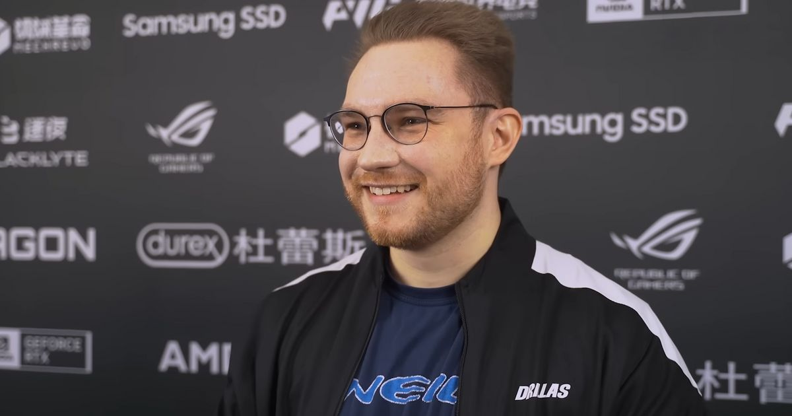
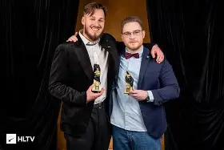
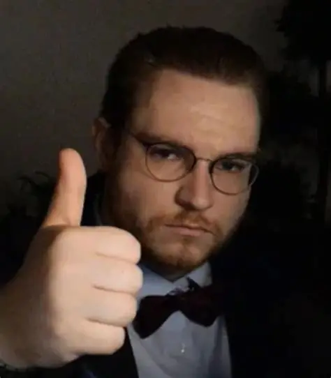
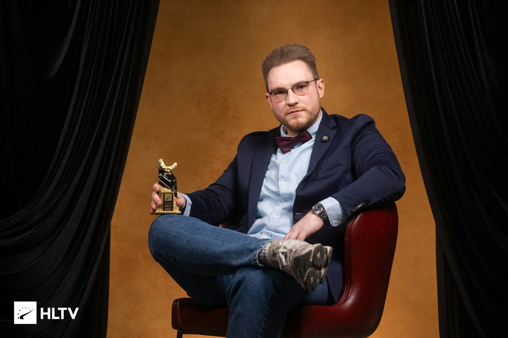
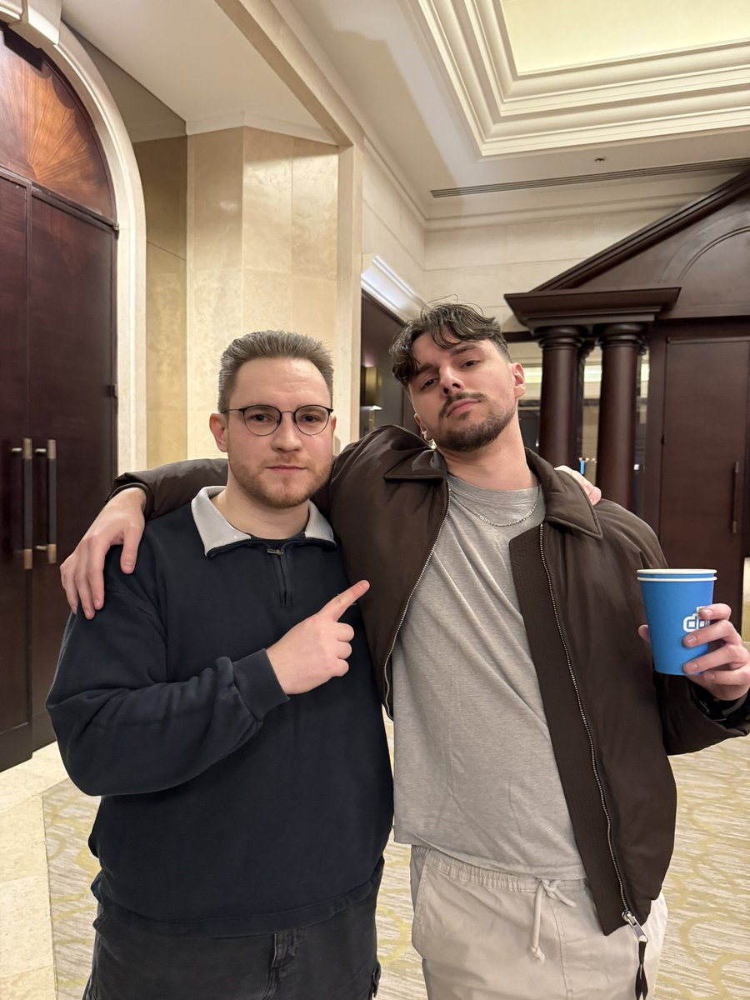

Fotky

Ohnepixel a jL na HLTV Awards

Ohnepixel vyladěný na největší Counter-Strike opening historie
Ohnepixel jako malé dítě
smějící se Ohnepixel
Ohnepixel na cestách

Ohnepixel s cenou nejlepšího streamera roku 2024
